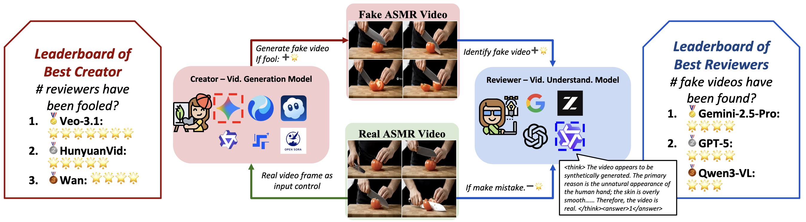
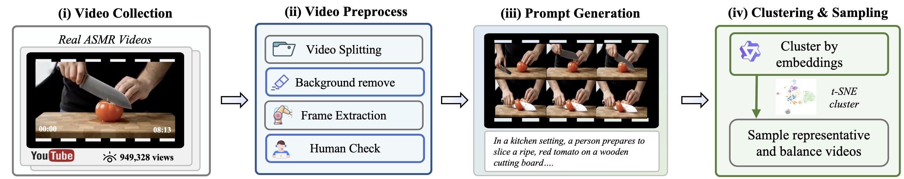
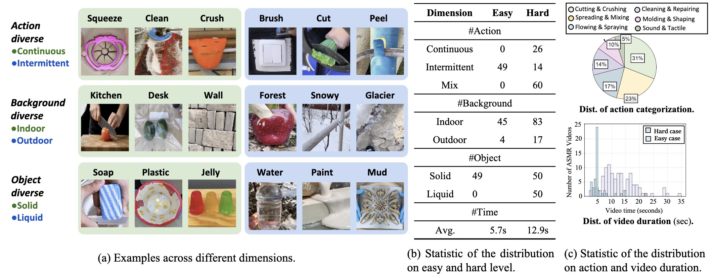
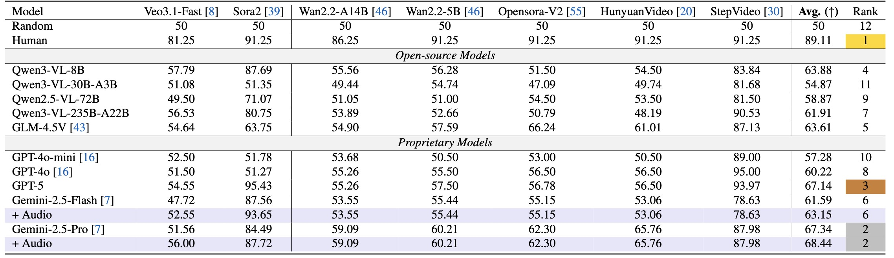
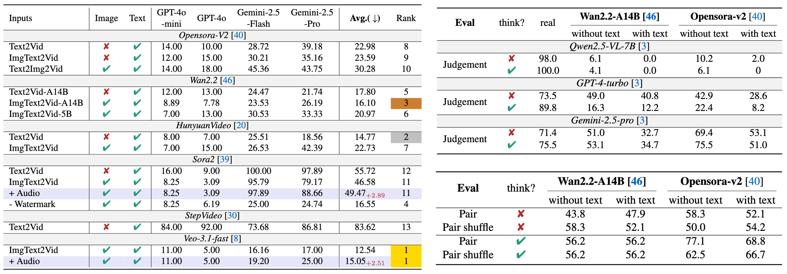

Recent advances in video generation have produced vivid content that are often indistinguishable from real videos, making AI-generated video detection an emerging societal challenge. Prior AIGC detection benchmarks mostly evaluate video without audio, target broad narrative domains, and focus on classification solely. Yet it remains unclear whether state-of-the-art video generation models can produce immersive, audio-paired videos that reliably deceive humans and VLMs. To this end, we introduce Video Reality Test, an ASMR-sourced video benchmark suite for testing perceptual realism under tight audio–visual coupling, featuring the following dimensions: (i) Immersive ASMR video-audio sources. Built on carefully curated real ASMR videos, the benchmark targets fine-grained action–object interactions with diversity across objects, actions, and backgrounds. (ii) Peer-Review evaluation. An adversarial creator–reviewer protocol where video generation models act as creators aiming to fool reviewers, while VLMs serve as reviewers seeking to identify fakeness. Our experimental findings show: The best creator Veo3.1-Fast even fools most VLMs: the strongest reviewer (Gemini 2.5-Pro) achieves only 56% accuracy (random 50%), far below that of human experts (81.25%). Adding audio improves real–fake discrimination, yet superficial cues such as watermarks can still significantly mislead models. These findings delineate the current boundary of video generation realism and expose limitations of VLMs in perceptual fidelity and audio–visual consistency.


We release the complete ASMR based Video Reality Test corpus: real videos, extracted images, prompts, and outputs from 13 different video-generation settings (OpenSoraV2 variants，Wan2.2 variants, Sora2，Veo3.1-fast, Hunyuan，StepFun, etc.). For each of the 149 scenes we therefore provide 1 + k clips (with k = 13 fakery families).Both ModelScope and Hugging Face mirrors host identical contents.



Q1-1. Are current VLMs reliable at distinguishing real and generated videos?
Q1-2. Does adding audio improve VLM detection performance?
Q2-1. Can current video generation models successfully fool VLMs?
Q2-2. What factors affect the realism of generated videos?
Real
Sora-2
Veo-3.1-fast
Real
Sora-2
Veo-3.1-fast
Real
Sora-2
Veo-3.1-fast
Real
Sora-2
Open Sora
Kling
Wan-A14B
@misc{luo2025vreasonbench,
title={Video Reality Test: Can AI-Generated ASMR Videos fool VLMs and Human?},
author={Jiaqi Wang and Jiawei Wu and Yi Zhan and Rui Zhao and Ming Hu and James Cheng and Wei Liu and Philip Torr and Kevin Qinghong Lin},
year={2025},
eprint={2511.16668},
archivePrefix={arXiv},
primaryClass={cs.CV},
url={https://arxiv.org/abs/xxxxxx},
}